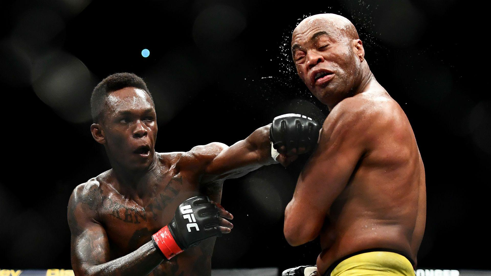

Israel Mobolaji Temitayo Odunayo Oluwafemi Owolabi Adesanya (born 22 July 1989) is a Nigerian-born New Zealand professional mixed martial artist, and former kickboxer and boxer. As a mixed martial artist, he is currently signed to the Ultimate Fighting Championship (UFC), where he is the UFC Middleweight Champion. Adesanya then faced Robert Whittaker in a title unification bout on 6 October 2019,headlining UFC 243 for UFC Middleweight Championship, After a knockdown in last second of the first round, Adesanya won the fight via knockout in the second round.
